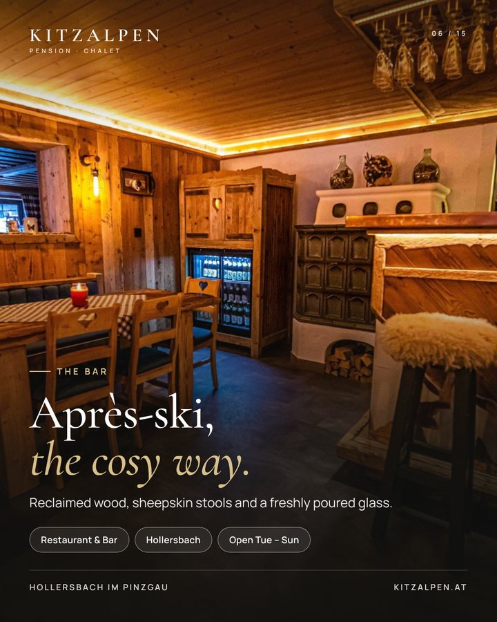
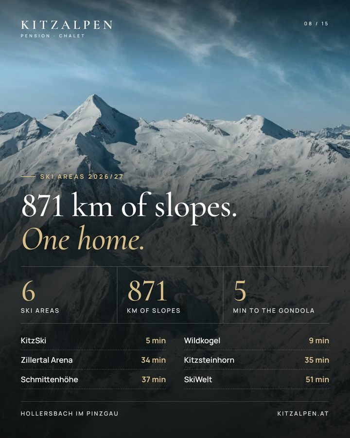
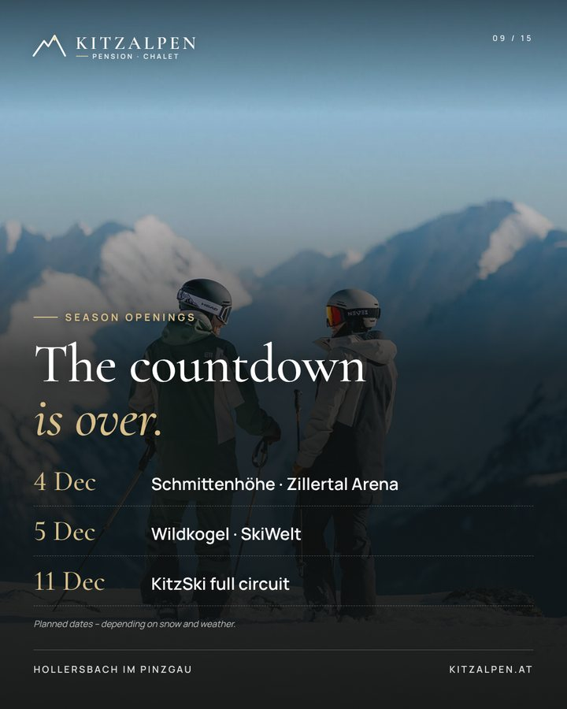
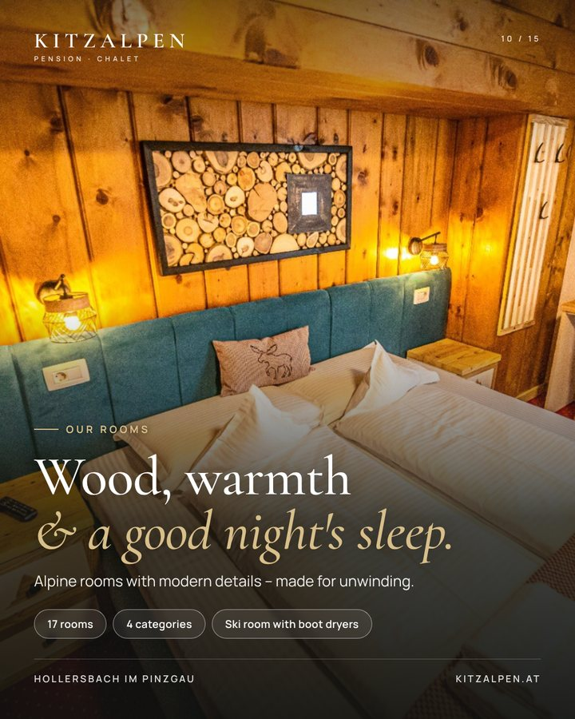
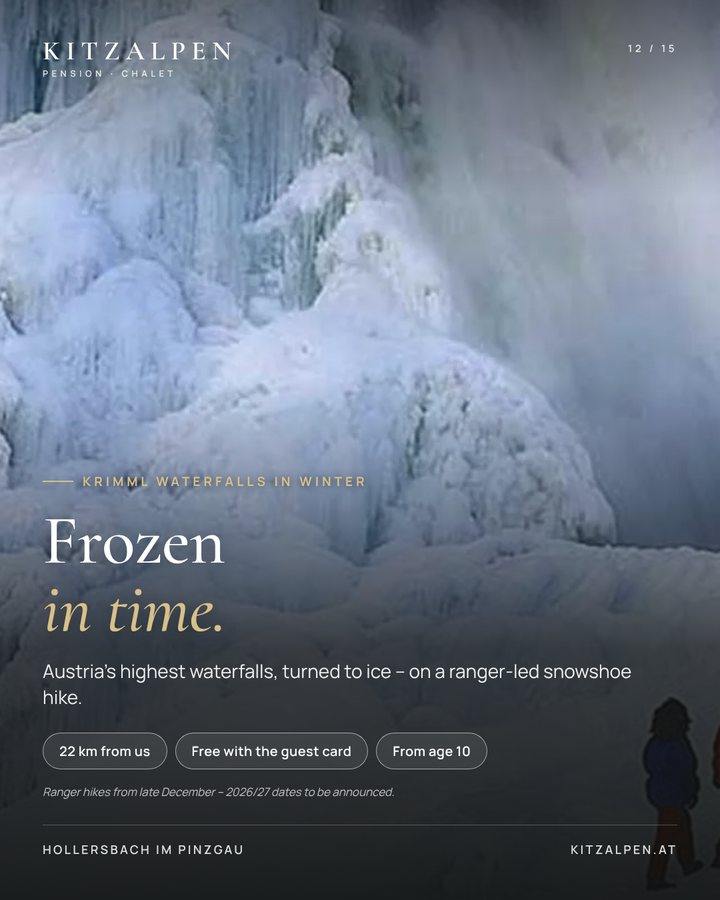
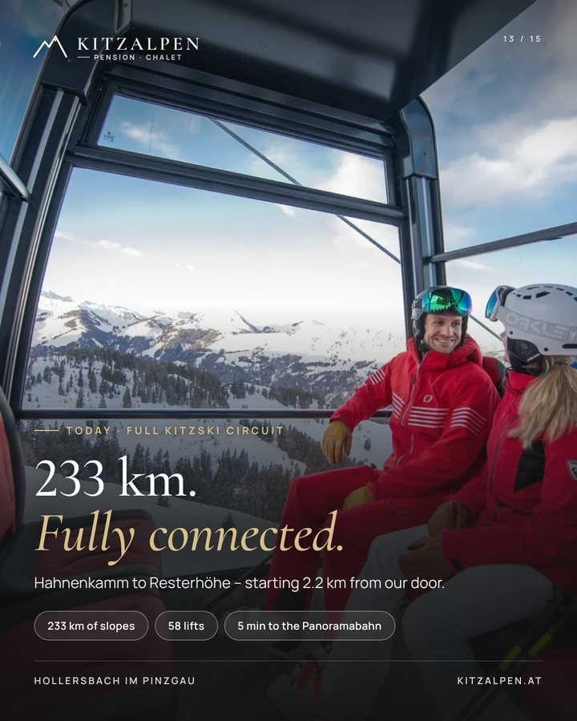

15 machete pentru Instagram și Facebook, una la 2 zile. Textul fiecărei postări e în germană, apoi engleză, cu detaliile de rezervare. Un singur buton îl copiază pe tot.
🇦🇹 Schnee auf den Dächern, Berge rundherum: Der Winter ist zurück in Hollersbach im Pinzgau – und wir freuen uns auf euch. ❄️ Pension, Chalet und Restaurant, nur fünf Minuten von der KitzSki-Gondel entfernt.
🇬🇧 Snow on the roofs, smoke from the chimneys, mountains all around. Winter is back in Hollersbach im Pinzgau – and so are we. ❄️ Pension, chalet and restaurant, five minutes from the KitzSki gondola.
📅 Jetzt buchen / Book now: kitzalpen.at
📞 +43 664 2376571
✉️ kitzbuhelalpenpension@gmail.com
📍 Reitlehen 42, 5731 Hollersbach im Pinzgau
#KitzAlpen #Hollersbach #Pinzgau #SalzburgerLand #WinterInAustria #AlpineLiving
19. NovDonnerstag · 18:00
Kitzbühel Advent · 18 Nov – 27 Dec
Advent lights, 36 minutes away.
🇦🇹 Der Kitzbüheler Advent hat begonnen! ✨ Bummelt durch die mittelalterliche Vorder- und Hinterstadt, wärmt euch die Hände an einer Tasse Punsch und lasst die Lichter wirken. Nur 36 Minuten von KitzAlpen entfernt. Geöffnet bis 27. Dezember.
🇬🇧 Kitzbühel Advent has started! ✨ Wander the medieval Vorderstadt and Hinterstadt, warm your hands on a mug of punch and let the lights do the rest. Only 36 minutes from KitzAlpen. Open until 27 December.
📅 Jetzt buchen / Book now: kitzalpen.at
📞 +43 664 2376571
✉️ kitzbuhelalpenpension@gmail.com
📍 Reitlehen 42, 5731 Hollersbach im Pinzgau
#KitzbühelAdvent #Kitzbühel #ChristmasMarket #Adventmarkt #KitzAlpen #Tirol
21. NovSamstag · 18:00
KitzAlpen Chalet
A house of your own, wrapped in lights.
🇦🇹 Lichterketten, Altholz und eine Tür, die nur euch gehört. 🏡 Unser KitzAlpen Chalet bietet Platz für bis zu 4 Personen – zwei Schlafzimmer, eine voll ausgestattete Küche und einen gemütlichen Wohnbereich für entspannte Abende nach dem Skitag.
🇬🇧 Fairy lights, reclaimed wood and a door that's only yours. 🏡 Our KitzAlpen Chalet sleeps up to 4 – two bedrooms, a full kitchen and a cosy living area for slow evenings after a day on the slopes.
📅 Jetzt buchen / Book now: kitzalpen.at
📞 +43 664 2376571
✉️ kitzbuhelalpenpension@gmail.com
📍 Reitlehen 42, 5731 Hollersbach im Pinzgau
#KitzAlpenChalet #ChaletLife #AlpineChalet #FamilyHoliday #Hollersbach #CosyVibes
23. NovMontag · 18:00
Restaurant & Bar
Cast iron. Pure Pinzgau.
🇦🇹 Geschmortes Rindfleisch mit Paprika, direkt aus der Pfanne auf euren Tisch. 🍷 Unsere Küche serviert hausgemachte, regionale Gerichte – Dienstag bis Sonntag, 17 bis 21 Uhr. Schon Hunger?
🇬🇧 Braised beef with peppers, straight from the pan to your table. 🍷 Our kitchen serves home-made, regional dishes every evening Tuesday to Sunday, 5–9 pm. Hungry yet?
📅 Jetzt buchen / Book now: kitzalpen.at
📞 +43 664 2376571
✉️ kitzbuhelalpenpension@gmail.com
📍 Reitlehen 42, 5731 Hollersbach im Pinzgau
#KitzAlpenRestaurant #AustrianFood #Foodie #Pinzgau #AlpineCuisine #DinnerTime
25. NovMittwoch · 18:00
Kitzsteinhorn glacier · open now
Skiing at 3,029 m. Already.
🇦🇹 Ihr könnt nicht bis Dezember warten? Müsst ihr auch nicht. 🏔️ Der Kitzsteinhorn-Gletscher in Kaprun ist seit 10. Oktober geöffnet – 61 Pistenkilometer bis auf 3.029 m, dazu die Panoramaplattform TOP OF SALZBURG für Nicht-Skifahrer. 35 Minuten von KitzAlpen.
🇬🇧 Can't wait for December? You don't have to. 🏔️ The Kitzsteinhorn glacier in Kaprun has been open since 10 October – 61 km of slopes up to 3,029 m, plus the TOP OF SALZBURG panorama platform for non-skiers. 35 minutes from KitzAlpen.
📅 Jetzt buchen / Book now: kitzalpen.at
📞 +43 664 2376571
✉️ kitzbuhelalpenpension@gmail.com
📍 Reitlehen 42, 5731 Hollersbach im Pinzgau
#Kitzsteinhorn #Kaprun #GlacierSkiing #SkiAustria #TopOfSalzburg #KitzAlpen

27. NovFreitag · 18:00
The Bar
Après-ski, the cosy way.
🇦🇹 Das Schönste an einem Skitag? Sein Ausklang. 🥂 Altholz, Schaffellhocker, warmes Licht und ein frisch gezapftes Glas an unserer Bar. Markiert die Person, mit der ihr eine Runde teilen würdet.
🇬🇧 The best part of a ski day? The end of it. 🥂 Reclaimed wood, sheepskin stools, warm light and a freshly poured glass at our bar. Tag the person you'd share a round with.
📅 Jetzt buchen / Book now: kitzalpen.at
📞 +43 664 2376571
✉️ kitzbuhelalpenpension@gmail.com
📍 Reitlehen 42, 5731 Hollersbach im Pinzgau
#ApresSki #KitzAlpen #AlpineBar #CosyEvenings #WinterVibes #Austria
29. NovSonntag · 18:00
Guest Mobility Ticket
Leave the car. Trains & buses included.
🇦🇹 Gut zu wissen: Seit Mai 2025 erhält jeder Übernachtungsgast im Land Salzburg beim Check-in das Gäste-Mobilitätsticket – alle Busse, S-Bahnen sowie Regional- und Fernzüge im ganzen Bundesland inklusive. 🚆 Dazu die M+ Gästekarte für Mittersill, Hollersbach und Stuhlfelden.
🇬🇧 Good to know: since May 2025 every overnight guest in Salzburg gets the Guest Mobility Ticket at check-in – all buses, S-Bahn and regional & long-distance trains across the state, included. 🚆 Plus the M+ Guest Card for Mittersill, Hollersbach & Stuhlfelden.
📅 Jetzt buchen / Book now: kitzalpen.at
📞 +43 664 2376571
✉️ kitzbuhelalpenpension@gmail.com
📍 Reitlehen 42, 5731 Hollersbach im Pinzgau
#GuestMobilityTicket #SalzburgerLand #SustainableTravel #KitzAlpen #CarFreeHoliday

1. DezDienstag · 18:00
Ski areas 2026/27
871 km of slopes. One home.
🇦🇹 Hallo Dezember! 🎿 Sechs Skigebiete, 871 Pistenkilometer – und wir mittendrin. KitzSki 5 Min., Wildkogel 9, Zillertal Arena 34, Kitzsteinhorn 35, Schmittenhöhe 37, SkiWelt 51. Welches steht bei euch ganz oben auf der Liste?
🇬🇧 Hello December! 🎿 Six ski areas, 871 km of slopes – and we're right in the middle. KitzSki 5 min, Wildkogel 9 min, Zillertal Arena 34, Kitzsteinhorn 35, Schmittenhöhe 37, SkiWelt 51. Which one is first on your list?
📅 Jetzt buchen / Book now: kitzalpen.at
📞 +43 664 2376571
✉️ kitzbuhelalpenpension@gmail.com
📍 Reitlehen 42, 5731 Hollersbach im Pinzgau
#SkiAustria #KitzSki #Wildkogel #ZillertalArena #Schmittenhöhe #SkiWelt #KitzAlpen

3. DezDonnerstag · 18:00
Season openings
The countdown is over.
🇦🇹 Diese Woche ist es so weit! ⛷️ Schmittenhöhe und Zillertal Arena starten am 4. Dezember, Wildkogel und SkiWelt am 5. Dezember, die komplette KitzSki-Skischaukel am 11. Dezember. Ski schon gewachst? (Geplante Termine, abhängig von Schnee und Wetter.)
🇬🇧 This is the week! ⛷️ Schmittenhöhe and the Zillertal Arena open on 4 December, Wildkogel and SkiWelt on 5 December, and the full KitzSki circuit on 11 December. Skis waxed? (Planned dates, depending on snow and weather.)
📅 Jetzt buchen / Book now: kitzalpen.at
📞 +43 664 2376571
✉️ kitzbuhelalpenpension@gmail.com
📍 Reitlehen 42, 5731 Hollersbach im Pinzgau
#SeasonOpening #SkiOpening #SkiAustria #Powder #KitzAlpen #Pinzgau

5. DezSamstag · 18:00
Our rooms
Wood, warmth & a good night's sleep.
🇦🇹 Rein ins Warme. 🛏️ 17 Zimmer in vier Kategorien – Doppel-, Dreibett-, Vierbett- und Familienzimmer mit Verbindungstür – viel Holz, warmes Licht und ein Skiraum mit Schuhtrocknern.
🇬🇧 Come in from the cold. 🛏️ 17 rooms in four categories – double, triple, quad and family rooms with connecting door – plenty of wood, warm light and a ski room with boot dryers downstairs.
📅 Jetzt buchen / Book now: kitzalpen.at
📞 +43 664 2376571
✉️ kitzbuhelalpenpension@gmail.com
📍 Reitlehen 42, 5731 Hollersbach im Pinzgau
#KitzAlpenPension #AlpineRooms #FamilyRoom #Hollersbach #SkiHoliday #CosyRoom
7. DezMontag · 18:00
Tauern Spa · 27 min
12 pools. 10 saunas. Zero worries.
🇦🇹 Ruhetag? Dann aber richtig. 💦 Tauern Spa in Kaprun: 20.000 m² Wasser- und Saunawelt, 12 Becken, 10 Saunen und Dampfbäder, mit Blick aufs Kitzsteinhorn. 27 Minuten von KitzAlpen.
🇬🇧 Rest day? Make it a good one. 💦 Tauern Spa in Kaprun: 20,000 m² of pools and saunas, 12 pools, 10 saunas and steam baths, panoramic views of the Kitzsteinhorn. 27 minutes from KitzAlpen.
📅 Jetzt buchen / Book now: kitzalpen.at
📞 +43 664 2376571
✉️ kitzbuhelalpenpension@gmail.com
📍 Reitlehen 42, 5731 Hollersbach im Pinzgau
#TauernSpa #Kaprun #Wellness #SpaDay #RestDay #KitzAlpen

9. DezMittwoch · 18:00
Krimml Waterfalls in winter
Frozen in time.
🇦🇹 Eine Eisskulptur der Natur. 🧊 Bei einer geführten Schneeschuhwanderung mit dem Nationalpark-Ranger seht ihr die Krimmler Wasserfälle im Wintereis. Kostenlos mit Gästekarte oder WinterCard, 23 Minuten von KitzAlpen. (Programm 2026/27 folgt – letzten Winter: montags ab Ende Dezember.)
🇬🇧 Nature's own ice sculpture. 🧊 On a ranger-led snowshoe hike you'll see the Krimml Waterfalls hung with winter ice. Free with the guest card or WinterCard, 23 minutes from KitzAlpen. (2026/27 programme to be announced – last winter: Mondays from late December.)
📅 Jetzt buchen / Book now: kitzalpen.at
📞 +43 664 2376571
✉️ kitzbuhelalpenpension@gmail.com
📍 Reitlehen 42, 5731 Hollersbach im Pinzgau
#KrimmlWaterfalls #Krimml #HoheTauern #Snowshoeing #NationalPark #KitzAlpen

11. DezFreitag · 18:00
Today · full KitzSki circuit
233 km. Fully connected.
🇦🇹 Es ist so weit! 🚠 Ab heute ist die komplette KitzSki-Skischaukel offen – vom Hahnenkamm bis zur Resterhöhe, 233 km und 58 Lifte. Unsere Abkürzung: die Panoramabahn in Hollersbach, nur 5 Minuten von KitzAlpen.
🇬🇧 It's here! 🚠 From today the full KitzSki circuit is open – Hahnenkamm to Resterhöhe, 233 km and 58 lifts. Our shortcut: the Panoramabahn in Hollersbach, just 5 minutes from KitzAlpen.
📅 Jetzt buchen / Book now: kitzalpen.at
📞 +43 664 2376571
✉️ kitzbuhelalpenpension@gmail.com
📍 Reitlehen 42, 5731 Hollersbach im Pinzgau
#KitzSki #Kitzbühel #Hahnenkamm #Panoramabahn #SkiDay #KitzAlpen
13. DezSonntag · 18:00
Wildkogel toboggan run
14 km. Floodlit. Unforgettable.
🇦🇹 14 km, 1.300 Höhenmeter und Licht bis ins Tal. 🛷 Die Rodelbahn am Wildkogel in Bramberg ist täglich bis 22 Uhr beleuchtet (montags bis 18 Uhr) – 9 Minuten von KitzAlpen. Start etwa Mitte Dezember, je nach Schneelage.
🇬🇧 14 km, 1,300 vertical metres and lights all the way down. 🛷 The Wildkogel toboggan run in Bramberg is floodlit daily until 10 pm (Mon until 6 pm) – 9 minutes from KitzAlpen. Opens around mid-December, snow permitting.
📅 Jetzt buchen / Book now: kitzalpen.at
📞 +43 664 2376571
✉️ kitzbuhelalpenpension@gmail.com
📍 Reitlehen 42, 5731 Hollersbach im Pinzgau
#Wildkogel #Tobogganing #Rodeln #NightSledding #FamilyFun #KitzAlpen
15. DezDienstag · 18:00
Book your winter
Christmas in the Alps starts here.
🇦🇹 Die Lichter brennen, die Pisten sind offen, der Baum steht. 🎄 Verbringt Weihnachten und Silvester bei uns in Hollersbach – im Zimmer in der Pension oder im eigenen Chalet. Jetzt direkt buchen auf kitzalpen.at.
🇬🇧 The lights are on, the slopes are open and the tree is up. 🎄 Spend Christmas and New Year with us in Hollersbach – a room in the pension or your own chalet. Book directly at kitzalpen.at.
📅 Jetzt buchen / Book now: kitzalpen.at
📞 +43 664 2376571
✉️ kitzbuhelalpenpension@gmail.com
📍 Reitlehen 42, 5731 Hollersbach im Pinzgau
#ChristmasInTheAlps #WinterHoliday #KitzAlpen #Hollersbach #NewYearInAustria #BookDirect